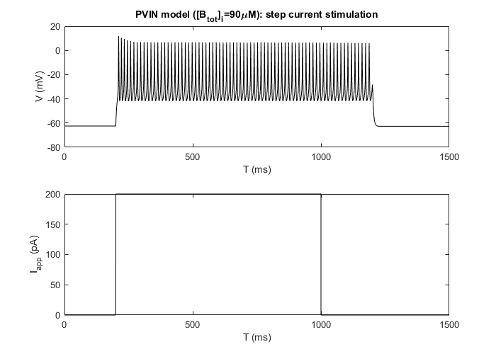
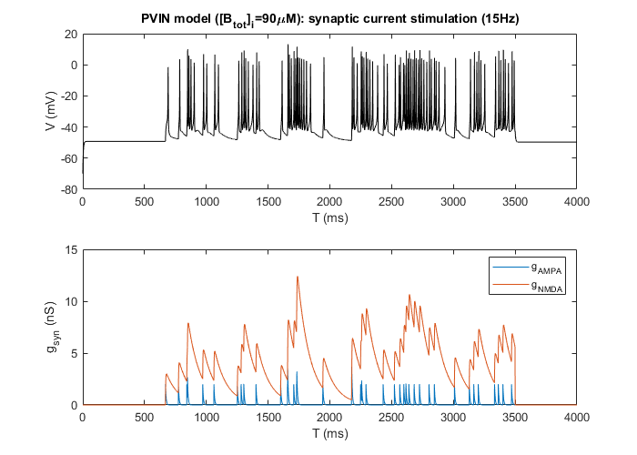
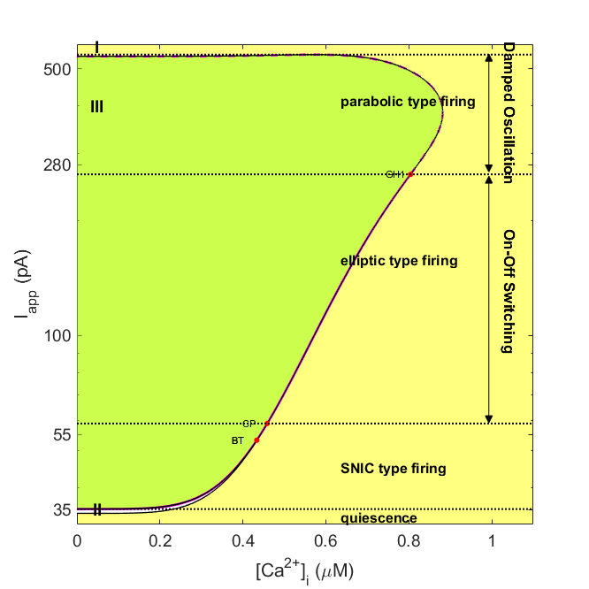

This is the readme for the models associated with the manuscript in preparation:
"Ma, X., Miraucourt, L., Qiu, H., Sharif-Naeini, R., Khadra, A. (2023). Calcium buffering tunes intrinsic excitability of spinal dorsal horn parvalbumin-expressing interneurons: A computational model."
The code can be used to produce the time series simulations and bifurcation analysis of PVIN model.
---------------------------------------------
Author: Xinyue Ma
Email: xinyue.ma@mail.mcgill.ca
Integrated Program in Neuroscience
McGill University
Montreal, QC, H3A 1A1
Canada
---------------------------------------------
The PVIN model is a Hodgkin-Huxley type model of parvalbumin-expressing interneurons (PVINs) in the dorsal horn of the spinal cord. It consists ion channels including fast-transient sodium channel (Nav), slow delayed-rectifier potassium channel (Kv1), fast delayed-rectifier potassium channel (Kv3), high voltage-gated calcium channel (Cav), small conductance calcium-activated potassium channel (SK), and a leak current. It also uses the flux-balanced equation describing the intracellular calcium dynamics. The PVIN model is simulated using a stable step current protocol and a randomized synaptic current protocol. The code of PVIN model written in Matlab and XPP are both provided.
The model is adopted from Bischop et al. 2012 and reparametrized to fit the electrical activity of spinal dorsal horn PVINs from naive mice. It reproduces the firing pattern change of PVINs from tonic to transient following nerve injury, which is realized by reducing cytosolic calcium buffer concentration. The bifurcation analysis of PVIN model further explains how the firing pattern transits as the injection current increases, in a manner similar to that is seen in our transient firing PVIN recordings.
The code also includes a “in vivo-like” neural circuit model of Aβ fiber-mediate nociceptive neural circuit. The circuit model is stimulated by Poisson-distributed excitatory synaptic currents representing the presynaptic inputs from the Aβ fibers. It includes the PVIN model above, as well as another HH type model describing the excitability of a PVIN post-synaptic target: the excitatory interneuron expressing protein kinase C gamma (PKCγIN). The PKCγIN model is adapted from Medlock et al. 2022. The Aβ fiber-like presynaptic current was applied on both the inhibitory PVIN model and the excitatory PKCγIN model, the latter of which also received inhibitory synaptic input from the PVIN model.
Reference:
Bischop, D. P., Orduz, D., Lambot, L., Schiffmann, S. N., & Gall, D. (2012). Control of neuronal excitability by calcium binding proteins: a new mathematical model for striatal fast-spiking interneurons. Frontiers in molecular neuroscience, 5, 78.
Medlock L, Sekiguchi K, Hong S, Dura-Bernal S, Lytton WW, Prescott SA (2022) Multiscale Computer Model of the Spinal Dorsal Horn Reveals Changes in Network Processing Associated with Chronic Pain. J Neurosci 42:3133–3149.
| PVIN_2023.ode | PVIN model for time series simulations |
|---|
| PVIN_STEP_Simu.m | Example code to generate step current-stimulated voltage response of PVINs, as in Figs. 2,3 & 5 in Ma et al. 2023 |
|---|---|
| PVIN_Syn_Simu.m | Example code to generate Poisson-distributed synaptic current-stimulated voltage response of PVINs, as in Fig. 9 in Ma et al. 2023 |
| PVIN_TwoParBifur.m | Example code to reproduce the two-parameter bifurcation diagram shown in Fig. 8 in Ma et al. 2023 |
| NeuralCircuit.mlx | Example code to simulate the spinal dorsal neural circuit model, as in Fig. 9 in Ma et al. 2023 |
| PVIN_HH.m | ODEs of PVIN model |
| ePKCmodel.m | ODEs of ePKCγ interneuron model |
| PVIN_Cai.m | Function: MATCONT equations of PVIN model |
| PVIN_Cai.mat | Function: MATCONT variables of PVIN model |
| runHHmodel_STEP.m | Function: Step current stimulation protocol of PVIN model |
| runHHmodel_AbetaPoisson.m | Function: Synaptic current stimulation protocol of PVIN model |
| mySynInput.m | Function: Generate the time series of AMPA and NMDA conductances at customized firing rate |
| poissonSpikeGen.m | Function: Generate Poisson-distributed timing of spike trains |
| factor_syn.m | Function: Generate a factor to correct the exponential equation peaks at 1 |
| genSyn.m | Function: Generate the time series of a customized synaptic conductance |
PVIN_2023.ode with XPPAUTPVIN_STEP_Simu.m
PVIN_Syn_Simu.m
PVIN_TwoParBifur.m
Open and run NeuralCircuit.mlx. This is a livescript presenting the simulation steps of the neural circuit model associated with Fig. 9 in Ma et al. 2023. The steps include:
**************************************************************************************************